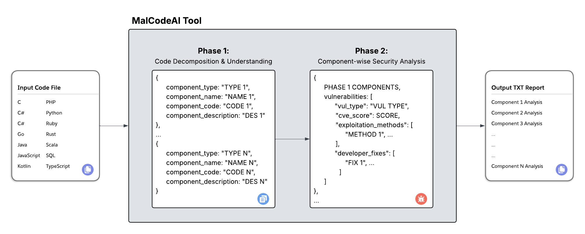
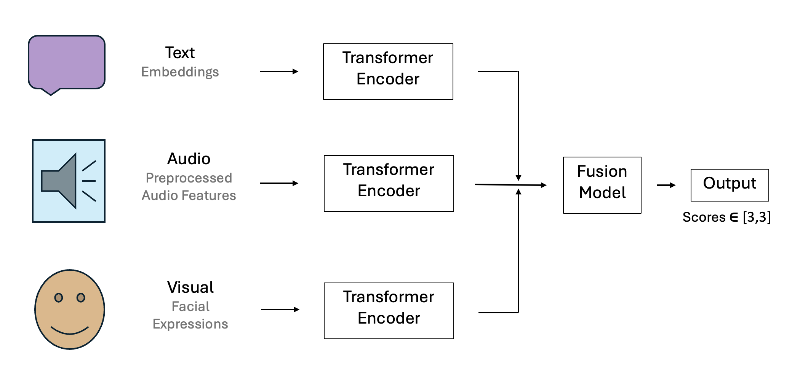
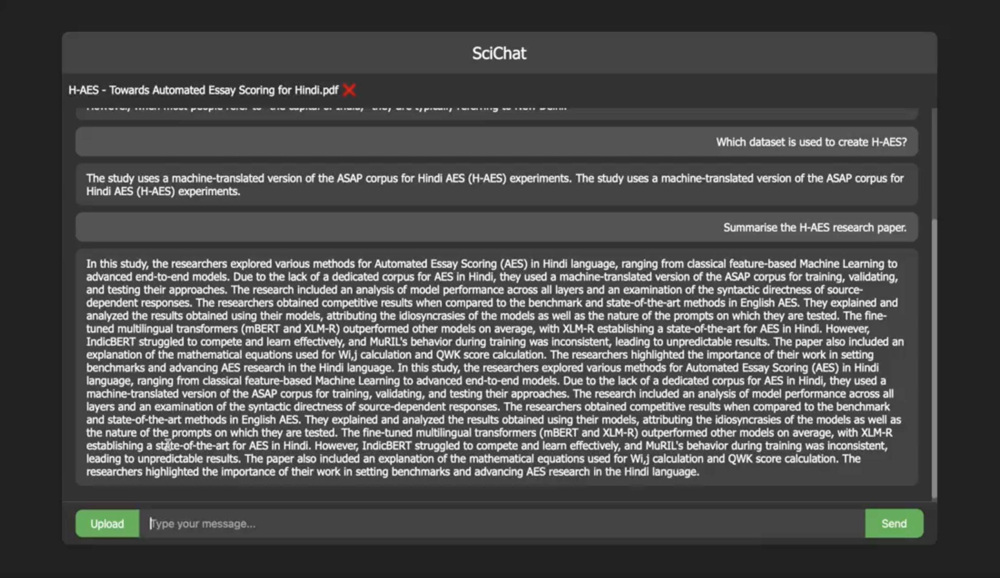
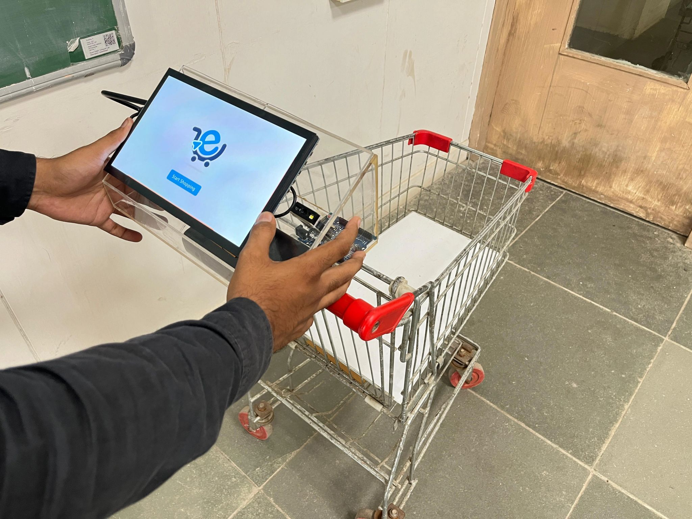

MalCodeAI: AI-Powered Malicious Code Detection
MalCodeAI is a cutting-edge dual-stage pipeline leveraging Large Language Models (LLMs) to detect, exploit, and automatically remediate software vulnerabilities in source code. The system integrates static analysis, exploit simulation, and fix suggestions for autonomous secure coding workflows.
Technologies: Python, LLMs, HuggingFace, Apple MLX, Static Code Analysis, Security Exploit Simulation
Multimodal Sentiment Analysis with CMU-MOSEI Dataset
This project presents a Transformer-based approach for sentiment analysis on the CMU-MOSEI dataset, combining textual, visual, and acoustic cues to achieve deeper emotional understanding. By early fusing multimodal information, the system enhances sentiment prediction performance for complex human communication.
Technologies: Python, PyTorch, HuggingFace, Multimodal Deep Learning, Sentiment Analysis
SciChat: PDF-Aware Scientific Chatbot
SciChat enables interactive question-answering over scientific documents by combining LangChain, Pinecone vector search, and the Mistral7B language model. It provides context-aware responses and is optimized for research assistance, knowledge retrieval, and document comprehension.
Technologies: Python, LangChain, Pinecone, LLMs, NLP
EzyCart: Computer Vision Powered Portable E-Cart System
EzyCart is an AI-powered smart shopping cart system that uses computer vision to automatically identify products, enabling seamless, on-the-go billing & checkout. The project includes a patent published in India and showcases real-time embedded AI, object detection, and edge computing for retail automation.
Technologies: Computer Vision, Edge Computing, Embedded Systems, Python, OpenCV, PyTorch, RoboFlow
Crypt Chat: Encrypted Messaging with Steganography

Crypt Chat is a secure Android messaging application that integrates AES-256 encryption with steganography for covert communication. It enables confidential text exchanges with hidden data transmission embedded within media files, offering enhanced privacy for both personal and sensitive professional use.
Technologies: Android, Java, AES-256, Steganography, Google Firebase